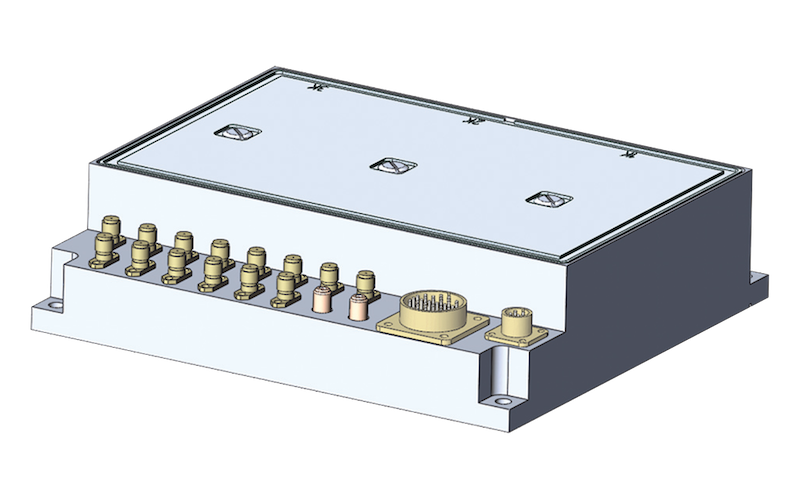

Приёмо-задающий модуль метео-навигационной РЛС
Описание
Приёмо-задающий модуль является многофункциональным устройством, предназначенным для применения в перспективных бортовых РЛС. Изделие обеспечивает формирование сетки рабочих частот в широкой полосе СВЧ диапазона, высокостабильного перестраиваемого гетеродина, опорной частоты для синхронного детектора с доплеровской поправкой, опорных синхрочастот для импульсных устройств РЛС и ряда служебных сигналов с требуемыми характеристиками в соответствии с поступающей информацией, а также для приёма сигналов от антенны РЛС по трём каналам.
Технические характеристики


| ПЗМ диапазон рабочих частот | X |
| длительность СВЧ импульса, мкс | 0.5…32 |
| уровень мощности выходного сигнала передатчика, Вт, не менее | 20 |
| относительный уровень побочных спектральных составляющих в спектре выходного сигнала в полосе f =200 МГц, дБ, не более | -60 |
| полоса пропускания приёмного канала, МГц | 4 |
| избирательность по зеркальным каналам приёма, дБ, не менее | 60 |